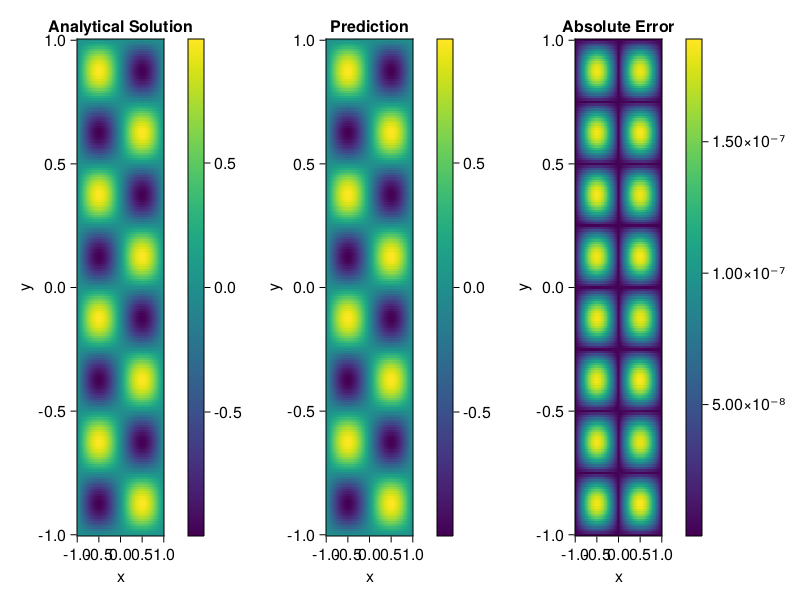

Helmholtz equation
Let us consider the Helmholtz equation in two space dimensions
\[\begin{aligned} &\Delta u(x, y)+k^{2} u(x, y)=q(x, y), \quad(x, y) \in \Omega:=(-1,1)^2 \\ &u(x, y)=0, \quad(x, y) \in \partial \Omega \end{aligned}\]
where
\[q(x, y)=-\left(a_{1} \pi\right)^{2} \sin \left(a_{1} \pi x\right) \sin \left(a_{2} \pi y\right)-\left(a_{2} \pi\right)^{2} \sin \left(a_{1} \pi x\right) \sin \left(a_{2} \pi y\right)+k^{2} \sin \left(a_{1} \pi x\right) \sin \left(a_{2} \pi y\right).\]
The excat solution is $u(x,y)=\sin{a_1\pi x}\sin{a_2\pi y}$. We chose $k=1, a_1 = 1$ and $a_2 = 4$.
using ModelingToolkit, IntervalSets, Sophon, Lux
using Optimization, OptimizationOptimJL
@parameters x,y
@variables u(..)
Dxx = Differential(x)^2
Dyy = Differential(y)^2
a1 = 1
a2 = 4
k = 1
q(x,y) = -(a1*π)^2 * sin(a1*π*x) * sin(a2*π*y) - (a2*π)^2 * sin(a1*π*x) * sin(a2*π*y) + k^2 * sin(a1*π*x) * sin(a2*π*y)
eq = Dxx(u(x,y)) + Dyy(u(x,y)) + k^2 * u(x,y) ~ q(x,y)
domains = [x ∈ Interval(-1,1), y ∈ Interval(-1,1)]
bcs = [u(-1,y) ~ 0, u(1,y) ~ 0, u(x, -1) ~ 0, u(x, 1) ~ 0]
@named helmholtz = PDESystem(eq, bcs, domains, [x,y], [u(x,y)])\[ \begin{align} \frac{\mathrm{d}}{\mathrm{d}y} \frac{\mathrm{d}}{\mathrm{d}y} u\left( x, y \right) + \frac{\mathrm{d}}{\mathrm{d}x} \frac{\mathrm{d}}{\mathrm{d}x} u\left( x, y \right) + u\left( x, y \right) =& - 166.78 \sin\left( 3.1416 x \right) \sin\left( 12.566 y \right) \end{align} \]
Note that the boundary conditions are compatible with periocity, which allows us to apply BACON.
chain = BACON(2, 1, 5, 2; hidden_dims = 32, num_layers=5)
pinn = PINN(chain) # call `gpu` on it if you want to use gpu
sampler = QuasiRandomSampler(300, 100)
strategy = NonAdaptiveTraining()
prob = Sophon.discretize(helmholtz, pinn, sampler, strategy)
@time res = Optimization.solve(prob, BFGS(); maxiters=1000)u: ComponentVector{Float64}(filters = (filter_1 = (bias = [0.028783746044447715; 1.118653436683748; … ; 0.8775039140569824; -0.803929989769129;;]), filter_2 = (bias = [0.05163324147705386; -0.8606094795035596; … ; 0.7217731705334737; -0.5064807900348625;;]), filter_3 = (bias = [-0.41475005022074013; -0.30124854733184153; … ; 0.7487549255890324; -0.7006488031939795;;]), filter_4 = (bias = [0.6243740220441075; 0.6374009233322581; … ; 0.4691358892541559; -0.326290281436717;;]), filter_5 = (bias = [-0.7406529335062039; -0.002841735703428069; … ; 0.8188709943537439; -0.7432674310541779;;])), linear_layers = (layer_1 = (weight = [0.23697077014308274 0.32630466900558025 … 0.32201310727038307 0.11145331263225648; -0.18141569559656984 0.3158964702201405 … 0.0768721988603431 -0.18025570891922812; … ; -0.020948017691129885 0.12340709953557824 … 0.33632791350328833 -0.021989571449551437; 0.310353693007786 0.20127337134574988 … -0.16466221702268993 0.2982472135323337], bias = [-0.027657438702124774; 0.007160998004534007; … ; 0.0056200796273939415; 0.016174777277656364;;]), layer_2 = (weight = [0.1385079149002761 0.02023309985485411 … 0.003101890356943099 0.12640137690190145; 0.34015641739369856 0.2211244734555195 … -0.238781679022531 0.36068846090188844; … ; -0.1986508964442985 0.33149465508122933 … -0.1717368005419075 -0.22484079439271376; 0.0005082319540051342 4.721615969384687e-5 … -0.18150520587582888 0.011059687565496207], bias = [-0.0006467276383425932; 0.008417066385478171; … ; 0.0027893653500194234; -0.042987390144250064;;]), layer_3 = (weight = [0.23886773340830003 0.15374772378227033 … -0.20115539161419935 -0.35380961578034775; -0.38476659909877414 -0.32770117257502257 … -0.1128134299984814 0.12553301017104485; … ; 0.3276617797901145 0.4003880111012512 … 0.2718857308661245 0.4179113702073394; -0.1126023059368732 0.4883228084430389 … 0.24312776535563757 0.24882644983918084], bias = [0.009102234866943188; -0.010655357861857432; … ; -0.01249776562210455; 0.0063814064656280145;;]), layer_4 = (weight = [-0.4156228416299889 0.03044229721842307 … 0.24148924812765699 0.23476852043172844; -0.2493000555999543 -0.289396396357292 … -0.2825831177213383 0.04050925598101123; … ; 0.016586052703357494 0.16866100462258762 … -0.35386851269449976 -0.11265696392780403; -0.16574626762596578 -0.21887137280416535 … 0.2940639132026961 -0.2542181490718617], bias = [-0.007957898974557762; 0.0006274657909851521; … ; 0.009018415296665874; -0.01943213150677362;;])), output_layer = (weight = [0.12614125353961547 0.25137925275275214 … 0.17173121107386854 -0.30097723985324565], bias = [0.08151428883100163;;]))Let's plot the result.
phi = pinn.phi
xs, ys= [infimum(d.domain):0.01:supremum(d.domain) for d in domains]
u_analytic(x,y) = sinpi(a1*x)*sinpi(a2*y)
u_real = [u_analytic(x,y) for x in xs, y in ys]
phi_cpu = cpu(phi) # in case you are using GPU
ps_cpu = cpu(res.u)
u_pred = [sum(phi_cpu(([x,y]), ps_cpu)) for x in xs, y in ys]
using CairoMakie
axis = (xlabel="x", ylabel="y", title="Analytical Solution")
fig, ax1, hm1 = heatmap(xs, ys, u_real, axis=axis)
Colorbar(fig[:, end+1], hm1)
ax2, hm2= heatmap(fig[1, end+1], xs, ys, u_pred, axis= merge(axis, (;title = "Prediction")))
Colorbar(fig[:, end+1], hm2)
ax3, hm3 = heatmap(fig[1, end+1], xs, ys, abs.(u_pred-u_real), axis= merge(axis, (;title = "Absolute Error")))
Colorbar(fig[:, end+1], hm3)
fig